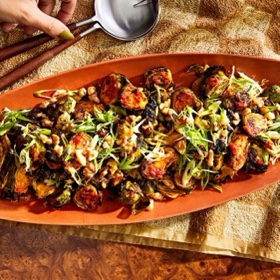

← All recipes
Roasted Brussels Sprouts with Gochujang Brown Butter

Servings: Yield 8 servings ·
Ingredients
- 3 lb. brussels sprouts, trimmed, halved if large
- 2 Tbsp. extra-virgin olive oil
- Kosher salt, freshly ground pepper
- ½ cup coarsely chopped walnuts (optional)
- 6 Tbsp. unsalted butter
- ⅓ cup gochujang (Korean hot pepper paste, such as Mother-in-Law's)
- 2 Tbsp. pure maple syrup
- 3 scallions, thinly sliced, divided
- ½ lemon
- Flaky sea salt
Directions
- Place racks in upper and lower thirds of oven and set a rimmed baking sheet on each; preheat oven to 500°. Toss brussels sprouts with oil in a large bowl to coat; season with kosher salt and pepper. Carefully (baking sheets will be hot!) divide brussels sprouts between baking sheets and spread out in a single layer; reserve bowl. Roast, rotating baking sheets top to bottom and front to back halfway through, until brussels sprouts are charred in spots and tender, 16–18 minutes.
- Meanwhile, if using walnuts, toast in a dry medium skillet over medium heat, tossing often, until fragrant and slightly darkened, about 4 minutes. Transfer to a small bowl and let cool.
- Cook butter in a small saucepan over medium-low heat, swirling occasionally, until milk solids are a deep amber color and butter smells very nutty, 5–8 minutes. Remove from heat and stir in gochujang and maple syrup. Season with kosher salt and pepper.
- Combine brussels sprouts, half of walnuts, and half of scallions in reserved bowl; add brown butter mixture and toss to coat. Transfer to a platter and scatter remaining walnuts and scallions over. Finely grate lemon zest on top; sprinkle with sea salt.
Original source: bonappetit.com